Tapez Alt+g pour ouvrir un niveau de géométrie 2-d.
Tapez Alt+h pour ouvrir un niveau de géométrie 3-d.
Ou bien utilisez le menu
Geo▸ New figure 2-d (resp
Geo▸ New figure 3-d) pour
ouvrir une fenêtre graphique 2-d (resp 3-d) avec sa barre de menus, ses
lignes de commandes (à gauche de lécran graphique) et ses boutons
(à droite de lécran graphique).
Les menus des commandes graphiques se trouvent dans le menu Geo ou dans
le bandeau et si on a choisit Voir Bandeau dans le menu
Cfg▸Montrer▸Bandeau.
Chaque bouton du bandeau ouvre les sous menus et il faut cliquez sur home
pour revenir au bandeau initial.
Xcas fait de la géométrie analytique : vous avez donc sous-jacent un
système de coordonnées.
Cliquez sur le menu Cfg pour initialiser le graphique et changer
la configuration des futurs graphiques.
On fait ainsi apparaitre le réglage des coordonnées :
X-, Y-, Z-, X+, Y+, Z+ les coordonnées où sont faits les calculs,
WX-, WY-, WX+, WY+ désignent les coordonnées de ce qui est visible,
t-, t+ désigne les bornes du paramètre des tracés paramétriques
ou polaires.
x_rot, z_rot permettent de changer la vue d’un dessin en 3-d.
Si vous voulez avoir un autre réglage au cours de votre travail, il faut
régler alors la configuration avec le bouton cfg situé à droite de
l’écran graphique. Si vous ne voulez pas voir les axes :
décocher Montrer les axes de la fenêtre du réglage des
coordonnées, puis, validez votre choix par OK ou
taper switch_axes(0).
En 3-d, utilisez aussi le menu M->3-d situé à droite de
l’écran graphique qui vous permet d’avoir une :
vue de face x=cst vue de cote y=cst vue de dessus z=cst
graph2tex a pour argument le nom d’un fichier.
graph2tex transforme le graphique en un fichier Latex de nom,
le nom spécifié. Vous pouvez alors utiliser ce fichier de façon
indépendante ou l’insérer dans un texte Latex. Dans ce cas il faudra
enlever l’en tête :
\documentclass{article}...\begin{document},
et enlever à la fin :
\end{document}
et de rajouter :
\usepackage{pstricks}
dans l’en-tête du fichier dans lequel on l’insère.
graph2tex() lorsque graph2tex n’a pas d’argument cela a
pour effet d’insérer dans l’historique ce qu’il faut, pour avoir le
graphique dans l’impression de l’historique : vous pouvez voir ce que vous
allez imprimer avec le menu Fich sous-menu
hist (Historique) imprimer en choisisant :
Pré-visualisation.
Remarque Pour toutes les commandes qui commencent par plot on n’a
pas besoin de la commande graph2tex(), le graphique est inséré
automatiquement dans l’historique...si vous ne le voulez pas utiliser une
commande synonyme ne commençant pas par plot !!!
En utilisant dans le menu M du bloc des boutons situé à droite
d’une sortie graphique :
Exporter/Imprimer vous pouvez sauver votre
graphique en Latex, en postscript et en png.
graph3d2tex a pour argument le nom d’un fichier.
graph3d2tex transforme le graphique 3-d en un fichier Latex de nom,
le nom spécifié. Vous pouvez alors insérer ce fichier dans un texte
Latex en ajoutant :
\usepackage{pstricks}
dans l’en-tête du fichier dans lequel on l’insère.
En utilisant dans le menu M du bloc des boutons situé à droite
d’une sortie graphique :
Exporter/Imprimer vous pouvez sauver votre
graphique en Latex, en postscript et en png.
On peut régler la fenêtre graphique
avec la commande xyztrange, on écrira par exemple :
xyztrange(-6.0,6.0,-7.0,4.0,-10.0,10.0,-1.0,6.0,
-5.0,5.0,-2.0,4.0,1,0.0,1.0)
pour avoir :
X-=-6, X+=6 (valeurs des x calculés),
Y-=-7, Y+=4 (valeurs des y calculés),
Z-=-10, Z+=10,
t-=-1, t+=6 (valeurs du paramètre en paramétrique ou en polaire),
WX-=-5, WX+=5, (valeur des x visibles),
WY-=-2, WY+=4 (valeurs des y visibles),
1 pour voir les axes (ou 0 pour ne pas les voir),
0.0 pour définir la valeur de class_min (pour faire
des statistiques)
1.0 pour définir la valeur de class_size (pour faire des
statistiques).
La commande xyztrange a 15 paramètres, il est donc préférable
lorsque on veut changer un paramètre ou régler la fenêtre graphique de
le faire à l’aide du bouton cfg.
Si vous voulez voir, (ou ne pas voir) les axes sans être obligé d’ouvrir
la fenêtre d’initialisation graphique :
taper switch_axes().
Pour faire réapparaitre les axes on fait la même chose :
switch_axes() dans la ligne de commande puis Entrée.
Dans un programme on utilisera la commande :
switch_axes(0) pour ne pas voir les axes et switch_axes(1) pour
les voir.
Pour obtenir un point il suffit de cliquer avec la souris (bouton gauche) pour
qu’un point s’affiche avec un nom.
Ce nom est crée automatiquement : A, B, C puis E etc...
Attention Il ne sera pas créer de point D automatiquement car
pour Maple D représente la fonction dérivée d’une fonction.
En dehors du mode Maple vous pouvez utiliser D comme
nom de variable (par exemple D:=point(1-i)).
On peut aussi taper :
M:=point((1,2)) ou N:=point(1+3*i) ou
P:=point(1) ou O:=point(0).
cela dessine les points M N P O dans le repère défini dans la
fenêtre d’initialisation graphique (bouton cfg).
Tous les points ainsi crées peuvent se déplacer ainsi que les constructions
qui en dépendent. Pour cela on clique sur le point :
le nom du point se met dans la ligne de commande et le point change de couleur
et devient bleu,
sans relacher le bouton de la souris on déplace le point.
Pour dire que le point A doit se trouver sur l’objet géomètrique
G on tape :
A:=element(G) ou bien
A:=element(G,1) ou bien
A:=element(G,t)
où t est un paramètre qui représente le paramètrage de l’objet
G.
Si on veut pouvoir faire bouger t à l’aide de la souris il faudra
définir t avec la commande element.
Par exemple :
Dans ce qui suit on suppose que l’on a défini deux points A et B
et que Ox et Oy désignent les axes du repère défini dans
la fenêtre d’initialisation graphique.
re(A) désigne le point projection orthogonale de A sur Ox.
im(A) désigne le point projection orthogonale de A sur Oy.
abscisse(A) désigne l’abscisse de A.
ordonnee(A) désigne l’ordonnée de A.
coordonnees(A) désigne la liste des coordonnées de A.
affixe(A) désigne le nombre complexe qui est l’affixe de A dans ce repère.
A, la multiplication d’un nombre complexe
λ=k*ei*θ par un point A, est un point qui se déduit de
A par une similitude de rapport k et d’angle θ.
B-A, la différence de deux points, est un nombre complexe égal à
la diffèrence des affixes de ces deux points (c’est l’affixe du vecteur
AB).
A+B, la somme de deux points, est un nombre complexe égal à la
somme des affixes de ces deux points (c’est l’affixe du point C tel que
OACB soit un parallélogramme).
C+A-B où A,B,C sont des points, désigne le
point transformé de C dans la translation de vecteur
BA (A-B est un nombre complexe qui est l’affixe de
BA).
C+u où C est un point et u est un nombre complexe,
désigne le point transformé de C dans la translation de vecteur
U d’affixe u.
Attention
si C a
été défini comme element(L) cela définit la pojection orthogonale
de ce translaté sur L.
Dans ce cas c’est point(affixe(C)+A-B) (resp point(affixe(C)+u))
qui est le translaté de C dans la translation de vecteur
BA (resp U).
longueur(A,B) désigne la longueur du segment AB.
longueur2(A,B) désigne le carré de la longueur du segment AB.
milieu(A,B) désigne le point milieu du segment AB.
isobarycentre(A,B,C) désigne l’isobarycentre des points A,B,C c’est
à dire le centre de gravité du triangle A,B,C.
Un vecteur libre est défini par deux points (son représentant) et est
entièrement défini par son affixe qui est le nombre complexe égal
à la différence de ces deux points :
en effet la différence de deux points est un nombre complexe égal à la
différence des affixes de ces deux points, et ce nombre complexe représente un vecteur d’origine O.
Exemples
Si on a deux points A et B le vecteur AB sera désigné par le nombre complexe B-A.
D:=C+A-B : D est un point tel que ABCD est un parallélogramme
puisque CD=BA (D-C=A-B).
abs(B-A) désigne la longueur du vecteur AB,
inv(B-A) désigne l’inverse du nombre complexe B-A : c’est donc
l’affixe d’un vecteur paralléle à conj(B-A),
conj(B-A) désigne le conjugué du nombre complexe B-A :
c’est donc l’affixe d’un vecteur paralléle au symétrique-Ox de B-A.
Pour dessiner un segment: on clique pour avoir un point et on déplace la
souris en gardant le bouton gauche enfoncé, puis, on déplace la souris
jusqu’au point désiré et on relâche le bouton de la souris.
Là encore les objets crées sont nommés automatiquement (par exemple
A, B pour les points et AB pour le segment reliant A
et B).
On peut aussi utiliser les commandes :
segment, droite, demi_droite avec comme paramètres 2 points (ou une
liste de 2 points) ou 2 nombres complexes (ou une liste de 2 nombres
complexes) ou encore un point et un nombre complexe et vis et versa.
On peut donc écrire si on a auparavant défini deux points A et
B :
segment(A,B) ou segment(-1+2*i,1+i) ou segment([A,B]) pour
définir un segment.
droite(A,B) ou droite(-1+2*i,1+i) ou droite([A,B]) pour
définir une droite.
demi_droite(A,B) ou demi_droite(i,1-i) ou
demi_droite([A,B]) pour définir une demi-droite d’origine A et
contenant B (ou une demi-droite d’origine point(-1+2*i) et
contenant point(1+i)).
Remarques
- Si on a défini un segment par deux points ou par des nombres
complexes on a la possibilité de donner un nom á ses extrémités en
rajoutant dans les arguments deux noms de variables.
On tape par exemple :
segment(-1+2*i,1+i,K,L) pour définir le point K d”affixe
−1+2*i et le point L d”affixe 1+i ou encore
segment(point(-1+i),1-i,M,N) pour définir le point M d”affixe
−1+i et le point N d”affixe 1−i.
- Si on a défini une demi_droite par deux points ou par des nombres
complexes on a la possibilité de donner un nom á son extrémité en
rajoutant dans les arguments un nom de variables.
On tape par exemple :
demi_droite(-1+2*i,1+i,P) pour définir le point P d”affixe
−1+2*i.
vecteur, en géométrie plane, a comme arguments soit :
On tape :
Ou on tape :
Ou on tape :
On obtient :
On tape :
On tape :
Ou on tape :
Ou on tape :
On obtient :
Remarque
En calcul formel, on travaille sur la liste des coordonnées des vecteurs que
l’on obtient avec la commande coordonnees (cf 1.4.6).
Soient 3 points A, B, C d’affixe a, b, c.
Montrer que le triangle ABC est équilatéral direct si et seulement si
a+b*j+c*j2=0 où j=exp(2iπ/3).
On a j2=exp(4iπ/3) et −j2=exp(iπ/3) et 1+j+j2=0
ABC est équilatéral direct est équivalent à :
(c−a)=−j2(b−a) donc est équivalent à :
c−a(1+j2)+bj2=c+a*j+b*j2=0 ou encore après multiplication par j2
est équivalent à :
a+b*j+c*j2=0.
On tape dans un niveau de géométrie :
supposons(b1=[1.3,-5,5,0.1]); supposons(b2=[2.3,-5,5,0.1]); b:=b1+(i)*b2; B:=point(b); supposons(c1=[-2.2,-5,5,0.1]); supposons(c2=[3.5,-5,5,0.1]); c:=c1+i*c2; C:=point(c); j:=exp(2*i*pi/3); a:=-b*j-c*j^2; A:=point(a); est_equilateral(A,B,C); normal((c-a)+j^2*(b-a));
La réponse pour est_equilateral(A,B,C); est 1 et
la réponse pour normal((c-a)+j^2*(b-a)); est 0 et
comme tout les calculs sont faits avec des paramètres
formels cela vaut une démonstration.
Pour la réciproque, on tape :
supposons(b1=[1.3,-5,5,0.1]); supposons(b2=[2.3,-5,5,0.1]); b:=b1+(i)*b2; B:=point(b); supposons(c1=[-2.2,-5,5,0.1]); supposons(c2=[3.5,-5,5,0.1]); c:=c1+i*c2; C:=point(c); j:=exp(2*i*pi/3); triangle_equilateral(B,C,A); a:=affixe(A) normal(a+b*j+c*j^2);
la réponse pour normal(a+b*j+c*j^2); est 0 et
comme tout les calculs sont faits avec des paramètres
formels cela vaut une démonstration.
Un cercle se définit par deux paramètres :
- soit par les extémités de son diamètre (le deuxième paramètre doit
être un point),
- soit par son centre et son rayon (le deuxième paramètre doit être un
nombre complexe).
On peut aussi définir des arcs de cercle en rajoutant deux
paramètres : les angles au centre des points qui définissent l’arc
mesurés en radians ou en degrés selon le choix fait (cf Cfg->Configuratioon du CAS) et à partir de l’axe Ox.
Dans la suite on suppose que l’on a définit deux points A et
B :
Exemples
Pour définir un arc AB situé sur le cercle de diamètre CD, on tape :
arccercle1(C,D,A,B):=
cercle(C,D,arg(A-milieu(C,D)),arg(B-milieu(C,D)));
Pour définir un arc AB situé sur le cercle de centre C et de rayon r, on tape :
arccercle2(C,r,A,B):=cercle(C,r,arg(A-C),arg(B-C));
On se repotera à 1.12 pour les cercles inscrits, exinscrits et circonscrits à un triangle.
On suppose que l’on a défini un cercle C.
centre(C) désigne le centre du cercle C.
rayon(C) désigne le réel égal au rayon du cercle C.
L’un des points d’intersection de deux objets géométriques est obtenu par
la commande inter_droite ou inter_unique.
On tape :
inter_droite(droite(i,1),cercle(0,1))
On obtient :
Le point 1 est dessiné dans un écran graphique
On tape :
inter_droite(droite(i,1),droite(0,1+i))
On obtient :
Le point (1+i)/2 est dessiné dans un écran graphique
Remarque
Lorsque l’intersection comporte plusieurs points inter_unique renvoie
l’un de ces points. Mais on peut mettre un 3ième argument pour le
spécifier qui est un point ou une liste de points :
L’intersection de deux objets géométriques est une liste de
points qui est obtenu par la commande inter.
Attention :
On utilise la commande inter pour des objets géométriques
et la commande intersect pour des ensembles ou des listes.
Exemples :
Soient D1,D2 deux droites concourantes et C un cercle qui coupe
D1.
E:=inter(D1,C) désigne la liste des deux points d’intersection de
D1 et C : E[0] est le premier point de la liste et
E[1] en est le second.
inter(D1,D2)[0] désigne le point d’intersection de D1 et D2.
Soient C1,C2 deux cercles concourants.
inter(C1,C2) désigne la liste des deux points d’intersection de
C1 et C2 : ainsi droite(inter(C1,C2)) désigne l’axe
radical de C1 et C2.
On tape :
inter(droite(i,1),cercle(0,1))
On obtient :
Les points i et 1 sont dessinés dans un écran graphique
On tape :
inter(droite(i,1),droite(0,1+i))[0]
On obtient :
Le point (1+i)/2 est dessiné dans un écran graphique
Étant donné deux points A et B la commande :
mediatrice(A,B) trace la médiatrice du segment AB.
Activité
Créer un segment AB.
Construire la médiatrice de AB, en utilisant la même construction
qu’avec un compas.
Réponse
On clique avec la souris pour avoir deux points A et B et le
segment AB.
On tape :
C1:=cercle(A,B-A) trace le cercle de centre A passant par B.
C2:=cercle(B,A-B) trace le cercle de centre B passant par A.
D:=droite(inter(C1,C2)) trace la droite joignant les deux points de
l’intersection de C1 et de C2 (inter(C1,C2) est la liste
des points de cette intersection).
La liste des instructions se trouve dans geo1 : cliquer avec la souris
pour avoir deux points A et B puis, faire Ouvrir du
menu Fich de Xcas et sélectionner geo1.xws.
On peut aussi comme exercice de programmation définir la fonction
Mediatrice (il faut commencer la fonction par une majuscule car
mediatrice est une commande de Xcas).
On tape :
Mediatrice(A,B):=droite(inter(cercle(A,longueur(A,B)),
cercle(B,longueur(A,B))))
Étant donné deux points A et B la commande :
M:=milieu(A,B) trace le milieu M du segment [AB].
Activité
Créer un segment [AB].
Construire le milieu de AB, soit en utilisant les coordonnées, soit
en utilisant la même construction qu’avec un compas.
Réponse
On tape :
M:=point((coordonnees(A)+coordonnees(B))/2)
ou bien on rajoute à la construction de la médiatrice (cf ci-dessus) :
M:=inter_unique(segment(A,B),D)
On peut aussi comme exercice de programmation définir la fonction
Milieu (il faut commencer la fonction par une majuscule car
milieu est une commande de Xcas).
On tape :
Milieu(A,B):=point((coordonnees(A)+coordonnees(B))/2)
ou encore si on a défini la fonction Mediatrice :
Milieu(A,B):=inter_unique(segment(A,B),Mediatrice(A,B))
isobarycentre définit l’isobarycentre de n points.
On tape par exemple :
G:=isobarycentre(A,B,C,D,E)
ou
G:=isobarycentre([A,B,C,D,E])
et G est l’isobarycentre des points A,B,C,D,E.
barycentre définit le barycentre de n listes formées d’un point et
d’un coefficient.
On tape par exemple :
K:=barycentre([A,2],[B,1],[C,-2],[D,3],[E,1])
ou
K:=barycentre([[A,2],[B,1],[C,-2],[D,3],[E,1]])
et K est le barycentre des points A,B,C,D,E affectés des
coefficients 2,1,-2,3,1.
Activités 1
Créer 4 points A,B,C,D.
Définir l’isobarycentre de A,B,C,D, en utilisant les coordonnées.
Réponse
On tape :
G:=point((coordonnees(A)+coordonnees(B)+coordonnees(C)+
coordonnees(D))/4)
On peut, comme exercice de programmation définir la fonction
Isobarycentre (il faut commencer la fonction par une majuscule car
isobarycentre est une commande de Xcas).
On tape :
Isobarycentre(L):={local d:=dim(L);point(sum(affixe(L[k]),k,0,d-1)/d);}
ou bien
Isobarycentre(L):={local d:=dim(L);sum(L[k],k,0,d-1)/d;}
Créer 4 points A,B,C,D.
Définir le barycentre de [A,1],[B,-2],[C,1],[D,3], en utilisant les
coordonnées.
Réponse
On tape :
G:=point((coordonnees(A)-2*coordonnees(B)+coordonnees(C)+
3*coordonnees(D))/3)
On peut aussi comme exercice de programmation définir la fonction
Barycentre (il faut commencer la fonction par une majuscule car
barycentre est une commande de Xcas).
On tape :
Barycentre(L):={
local s,d:=dim(L);
s:=sum(L[k],k,1,d-1,2);
si (s==0) alors return "pas defini" fsi;
retourne sum(L[k+1]*L[k],k,0,d-2,2)/s;
}
Activité 2 : Partager un triangle en 3 triangles de même aire
Soit un triangle ABC.
Avec Xcas
supposons(a=[2.6,-5,5,0.1]); supposons(b=[2,0,5,0.1]); supposons(c=[2.8,0,5,0.1]); A:=point(0); B:=point(b); C:=point(a+i*c); triangle(A,B,C); H:=projection(droite(B,C),A); H1:=point((H-A)*2/3); h:=hauteur(A,B,C); d1:=perpendiculaire(H1,h); d2:=droite(y=c/3); P:=inter_unique(d1,d2); segment(P,A,affichage=1); segment(P,B,affichage=1); segment(P,C,affichage=1); A1:=inter_unique(droite(C,B),droite(A,P)); C1:=inter_unique(droite(A,B),droite(C,P)); G:=isobarycentre(A,B,C):;On obtient :


Étant donné trois points A, B et C les commandes :
bissectrice(A,B,C) trace la bissectrice intérieure de l’angle A du
triangle ABC.
exbissectrice(A,B,C) trace la bissectrice extérieure de l’angle A
du triangle ABC.
Activité
Créer un triangle ABC.
Construire les bissectrices de l’angle A du
triangle ABC, en utilisant la même construction qu’avec un compas et en
utilisant l’instruction mediatrice.
Réponse
On clique avec la souris pour avoir un triangle ABC.
On tape :
C1:=cercle(A,2) trace un cercle de centre A et de rayon 2.
D:=inter(C1,droite(A,B)) définit l’intersection du cercle C1
et de la droite AB.
E:=inter(C1,droite(A,C)) définit l’intersection du cercle C1
et de la droite AC.
mediatrice(D[0],E[0])
mediatrice(D[1],E[0])
On peut aussi comme exercice de programmation définir les fonctions
Bissectrice et Exbissectrice (il faut commencer les noms des
fonctions par une majuscule car bissectrice et exbissectrice sont
des commandes de Xcas).
On tape si on a défini la fonction Mediatrice :
Bissectrice(A,B,C):=Mediatrice(inter_unique(demi_droite(A,B),
cercle(A,2)),inter_unique(demi_droite(A,C),cercle(A,2)))
Exbissectrice(A,B,C):={local C1:=A+(A-C);Bissectrice(A,B,C1)}
Étant donnés trois points A B et C, on veut construire un
point D pour que AD = BC.
On utilise la commande cercle et on tape :
D:= element(cercle(A,B-C))
L’instruction longueur(B,C) renvoie la longueur du segment BC (les
unités étant définies par le choix de WX-, WX+ et de
WY-, WY+) effectué dans la fenêtre d’initialisation graphique.
Si l’on veut reporter une longueur dans une direction donnée, on multiplie
cette longueur par le vecteur unitaire de cette direction.
Exemple :
Étant donnés trois points A B et C, construire sur la
demi-droite AB, un point D tel que AD=AC.
On tape :
D:=A+longueur(A,C)*(B-A)/longueur(A,B)
ou encore
D:=inter_unique(cercle(A,C-A),demi_droite(A,B))
Étant donnés deux points A et B, on veut construire C
pour que l’angle
(AB,AC) soit de mesure donnée
par exemple 72 degrés ou 2*π/5 radians.
On tape, si on a coché radian dans la fenêtre de configuration du
CAS :
D:=rotation(A,2*pi/5,droite(A,B))
ou, si on est en degré (on n’a pas coché radian) :
D:=rotation(A,72,droite(A,B))
puis on tape :
C:=element(D)
L’instruction angle(A,B,C) donne la mesure en radians (ou en degrés)
de l’angle
(AB,AC), on peut donc vérifier la
construction demandée.
Étant donné deux points A et B, on veut construire C
pour que l’angle
(AB,AC) soit égal à l’angle
(OM,OP).
On tape :
D:=rotation(A,angle(O,M,P), droite(A,B));
C:=element(D)
Étant donné trois points A B et C, on veut construire
la perpendiculaire, passant par A, à la droite BC.
On tape :
perpendiculaire(A,droite(B,C)) ou,
hauteur(A,B,C) (voir aussi 1.11) ou,
on utilise le nombre complexe i : droite(A,A+i*(C-B)).
Activité
Créer un point A et une droite BC ne passant pas par A.
Construire la perpendiculaire à la droite BC passant par A, en utilisant
la même construction qu’avec un compas.
Réponse
On clique avec la souris pour avoir un point A et deux points B et
C et le segment BC.
On tape :
C1:=cercle(B,A-B) trace le cercle de centre B passant par A
C2:=cercle(C,A-C) trace le cercle de centre C passant par A
droite(inter(C1,C2)) trace la droite qui joint les points d’intersection
des deux cercles précédents.
Activité
Créer un segment AB.
Construire la perpendiculaire à la droite AB passant par A en utilisant
la même construction qu’avec un compas.
Réponse
On clique avec la souris pour avoir deux points A et B et le
segment AB.
On tape :
C3:=cercle(A,B-A) trace le cercle de centre A passant par B
mediatrice(inter(C3,droite(A,B)))
trace la mediatrice des deux points définit par inter(C3,droite(A,B)),
cette médiatrice passe par A et est perpendiculaire à AB.
On peut aussi comme exercice de programmation définir la fonction
Perpendiculaire (il faut commencer le nom de la fonction par une
majuscule car perpendiculaire est une commande de Xcas).
On tape (A est un point et d est une droite) :
Perpendiculaire(A,d):={
local L,M,E:=element(d);
si est_element(A,d) alors
L:=inter(d,cercle(A,1));
retourne simplify(affixe(A)),simplify(equation(mediatrice(L)));
fsi;
si angle(E,d,A)==pi/2 or angle(E,d,A)==-pi/2 alors
retourne simplify(affixe(E)),equation(droite(A,E));
fsi;
M:=milieu(op(inter(d,cercle(A,E-A))));
retourne simplify(affixe(M)),equation(droite(A,M));
}:;
ainsi Perpendiculaire renvoie l’affixe de la projection orthogonale
E de A sur d et l’équation de la droite A,E.
On tape :
Perpendiculaire(point(1),droite(0,1+i))
On obtient :
i/2+1/2,y=(-x+1)
On tape :
Perpendiculaire(point(1),droite(-2,1+i))
On obtient :
i/2-1/2,y=(-3*x+3)
Étant donné trois points A B et C, on veut construire
la parallèle à la droite BC passant par A.
On tape :
parallele(A,droite(B,C))
Activité
Créer un point A et un segment BC ne passant pas par A.
Construire la parallèle à la droite BC passant par A en utilisant
l’instruction perpendiculaire.
Réponse
On clique avec la souris pour avoir un point A et deux points B et
C et le segment BC.
On tape :
D:=perpendiculaire(A,droite(B,C))
cela trace la perpendiculaire à BC passant par A
P:=perpendiculaire(A,D)
cela trace la perpendiculaire à D passant par A.
La liste des instructions se trouve dans geo5 : créer trois points
A, B, C, puis faire Charger session du
menu Fich de Xcas et selectionner geo5 du répértoire
examples/geo pour exécuter ce fichier.
On peut, comme exercice de programmation définir la fonction
Parallele (il faut commencer le nom de la fonction par une majuscule car
parallele est une commande de Xcas).
On tape (A est un point et d est une droite) :
Parallele(A,d):={
local d1:=droite(Perpendiculaire(A,d)[1]);
Perpendiculaire(A,d1)[1];
}:;
Parallele renvoie l’équation de la parallèle à d passant par
A.
On tape :
Parallele(point(i),droite(0,1+i))
On obtient :
y=(x+1)
Activité
Créer un point A et un segment BC ne passant pas par A.
Puis créer un point D pour définir d=longueur(A,D).
Construire les parallèles à la droite BC situées à une distance
d=longueur(A,D) de BC.
Réponse
On clique avec la souris pour avoir un point A et deux points B et
C et le segment BC, puis on clique avec la souris pour avoir un
point D (d=longueur(A,D)).
On tape :
D1:=perpendiculaire(B,droite(B,C));
C1:=cercle(B,longueur(A,D));
I:=inter(D1,C1);
E:=I[0];
F:=I[1];
ou on utilise les nombres complexes pour définir E et F :
E:=B+i*(C-B)*longueur(A,D)/longueur(B,C) le point E est à une
distance d=longueur(A,D) de la droite BC,
F:=B-i*(C-B)*longueur(A,D)/longueur(B,C) le point F est à une
distance d=longueur(A,D) de la droite BC (E et F sont
symètriques par rapport à BC),
puis,
parallele(E,droite(B,C)) trace une parallèle à la droite BC situées à une distance d=longueur(A,D) de BC.
parallele(F,droite(B,C)) trace l’autre parallèle à la droite BC situées à une distance d=longueur(A,D) de BC.
Étant donné un point A et un cercle C, la commande :
tangent(C,A) dessine les deux tangentes à C passant par A
si le point A est extérieur au cercle.
Si le point A est extérieur au cercle, tangent(C,A) est une liste
de deux droites (les deux tangentes à C passant par A) et
si le point A est sur le cercle tangent(C,A) est une droite (la
tangente à C passant par A).
Activité
Tracer les tangentes à un cercle passant par un point.
Cette activité doit se faire sans utiliser la commande tangent.
Créer deux points A et B.
Créer un cercle C1 de centre A et passant par B.
Construire la tangente au cercle C1 passant par B.
Créer un point C extérieur au cercle C1 et construire les
tangentes au cercle C1 passant par C.
Réponse
On clique avec la souris pour avoir trois points A, B et C
puis on exécute la liste des instructions qui se trouve dans geo7
(faire Charger session du
menu Fich de Xcas et selectionner geo7 du répértoire
examples/geo pour exécuter ce fichier).
Voici le détail de geo7 :
C1:=cercle(A,B-A) (C1 est le cercle de centre A qui passe par B),
perpendiculaire(B,droite(A,B)) (on dessine la tangente à C1 au point B),
C2:=cercle(C,A) (C2 est le cercle de diamètre AC),
E:=inter(C1,C2) (E désigne les 2 points d’intersection de C1 et de C2),
droite(E[0],C) (c’est une tangente à C1 passant par C),
droite(E[1],C) c’est l’autre tangente à C1 passant par C,
Activité
Tracer un cercle tangent à une droite donnée en un point donné et passant
par un autre point.
Créer trois points A, B et C.
Tracer la droite D passant par A et B.
Construire un cercle C1 passant par C et tangent à D en
A.
Réponse
On clique avec la souris pour avoir trois points A, B et C
puis on exécute la liste des instructions qui se trouve dans geo8
(faire Charger session du
menu Fich de Xcas et selectionner geo8 du répértoire
examples/geo pour exécuter ce fichier).
Voici le détail de geo8 :
D:=droite(A,B) (trace la droite D passant par A et B),
P:=perpendiculaire(A,D) (trace la perpendiculaire à D passant par A),
M:=mediatrice(A,C) (trace la médiatrice de AC),
N:=inter(P,M)[0] (N est le point d’intersection des deux droites
précédentes),
C1:=cercle(N,A-N) (trace le cercle de centre N passant par A).
C1 repond à la question.
Soient C1:=cercle(A,r1) et C2:=cercle(B,r2).
Supposons r1!=r2 alors :
Si r1=r2 et A!=B il y a 2, 3, 4 tangentes communes et si r1=r2 et A=B une infinité de tangentes communes Voici le programme général :
tangentes(A,r1,B,r2):={
local C1,C2,C,D,p,L,t1,t2;
C1:=cercle(A,r1);
C2:=cercle(B,r2);
si r1==0 alors
return tangente(C2,A);
fsi;
si r2==0 alors
return tangente(C1,B);
fsi;
si longueur2(A,B)<(r2-r1)^2 alors
return [];
fsi;
si r1==r2 alors
si A==B alors return [infinity]; fsi;
p:=perpendiculaire(B,droite(A,B));
L:=inter(C2,p);
t1:=parallele(L[0],droite(A,B));
t2:=parallele(L[1],droite(A,B));
si longueur2(A,B)<(r2+r1)^2 alors
return [t1,t2];
sinon
return concat([t1,t2],tangente(C1,milieu(A,B)));
fsi;
fsi;
C:=division_point(A,B,r1/r2);
si longueur2(A,B)<(r2+r1)^2 alors
return tangente(C1,C);
sinon
D:=division_point(A,B,-r1/r2);
return concat(tangente(C1,C),tangente(C1,D));
fsi;
}:;
Activité
Tracer les tangentes extérieures communes à deux cercles sécants ou
extérieurs avec une construction géométrique niveau 3ième sans utiliser
la primitive tangente.
On suppose que si C1:=cercle(A,r1) et C2:=cercle(B,r2) alors :
longueur(A,B)>=|r2-r1|.
A:=point([-3.5,0.5],affichage=4); c1:=cercle(A,4,affichage=4); B:=point([1.3,1.4],affichage=4); c2:=cercle(B,4,affichage=4); p:=perpendiculaire(B,droite(A,B),affichage=ligne_tiret_point); L:=inter(c2,p); t1:=parallele(L[0],droite(A,B),affichage=1); t2:=parallele(L[1],droite(A,B),affichage=1);On obtient :


A:=point([-3.5,0.5],affichage=4); r1:=1.5; C1:=cercle(A,r1,affichage=4); B:=point([1.3,1.4],affichage=4); r2:=4; C2:=cercle(B,r2,affichage=4); C3:=cercle(B,r2-r1); C4:=cercle(A,B); L:=inter(C3,C4); T1:=inter_unique(demi_droite(B,L[0]),C2); T2:=inter_unique(demi_droite(B,L[1]),C2); t1:=parallele(T1,droite(A,L[0]),affichage=1); t2:=parallele(T2,droite(A,L[1]),affichage=1); segment(B,T1,affichage=ligne_tiret_point); segment(B,T2,affichage=ligne_tiret_point); segment(A,B);On obtient :

^2.tangente2c(A,r1,B,r2):={
local C1,C2,C3,C4,L,T1,T2,t1,t2,r,C,p;
si r1>r2 alors
r:=r1;r1:=r2;r2:=r;
C:=A;A:=B;B:=C;
fsi;
C1:=cercle(A,r1);
C2:=cercle(B,r2);
si longueur2(A,B)<(r2-r1)^2 alors
return [C1,C2];
fsi;
si r1==r2 alors
p:=perpendiculaire(B,droite(A,B));
L:=inter(C2,p);
t1:=parallele(L[0],droite(A,B),affichage=1);
t2:=parallele(L[1],droite(A,B),affichage=1);
return [C1,C2,t1,t2];
fsi;
C3:=cercle(B,r2-r1);
C4:=cercle(A,B);
L:=inter(C3,C4);
T1:=inter_unique(demi_droite(B,L[0]),C2);
T2:=inter_unique(demi_droite(B,L[1]),C2);
t1:=parallele(T1,droite(A,L[0]),affichage=1);
t2:=parallele(T2,droite(A,L[1]),affichage=1);
return [C1,C2,t1,t2]
}:;
Activité
Tracer les tangentes intérieures communes à deux cercles extérieurs.
Si les 2 cercles sont extérieurs, par exemple si :
C1:=cercle(A,r1) et C2:=cercle(B,r2), on doit avoir AB>r1+r2.
Si K1 et K2 sont les points de contact d’une tangente intérieure
commune à C1 et C2, la parallèle à K1K2 menée par A
coupe BK2 en R. On a BR=r2+r1 et le triangle A,B,R est rectangle en R.

Donc R se trouve sur le cercle de diamètre AB et sur le cercle de centre B et de rayon r2−r1.
A:=point([-3.5,0.5],affichage=4); r1:=1.5; C1:=cercle(A,r1,affichage=4); B:=point([3,2],affichage=4); r2:=4; C2:=cercle(B,r2,affichage=4); C3:=cercle(B,r2+r1); C4:=cercle(A,B); L:=inter(C3,C4); T1:=inter_unique(demi_droite(B,L[0]),C2); T2:=inter_unique(demi_droite(B,L[1]),C2); t1:=parallele(T1,droite(A,L[0]),affichage=1); t2:=parallele(T2,droite(A,L[1]),affichage=1); segment(B,L[0],affichage=ligne_tiret_point); segment(B,L[1],affichage=ligne_tiret_point); segment(A,B);On obtient :

^2.tangenti2c(A,r1,B,r2):={
local C1,C2,C3,C4,L,T1,T2,t1,t2,r,C,p;
si r1>r2 alors
r:=r1;r1:=r2;r2:=r;
C:=A;A:=B;B:=C;
fsi;
C1:=cercle(A,r1);
C2:=cercle(B,r2);
si longueur2(A,B)<(r2+r1)^2 alors
return [C1,C2];
fsi;
si longueur2(A,B)<(r2+r1)^2 alors
return [C1,C2];
fsi;
C3:=cercle(B,r2+r1);
C4:=cercle(A,B);
L:=inter(C3,C4);
T1:=inter_unique(demi_droite(B,L[0]),C2);
T2:=inter_unique(demi_droite(B,L[1]),C2);
t1:=parallele(T1,droite(A,L[0]),affichage=1);
t2:=parallele(T2,droite(A,L[1]),affichage=1);
return [C1,C2,t1,t2]
}:;
Voici le programme général :
tangentei2c(A,r1,B,r2):={
local C1,C2,C3,C4,C5,L,L1,T1,T2,T3,T4,t1,t2,t3,t4,r,C,p;
si r1>r2 alors
r:=r1;r1:=r2;r2:=r;
C:=A;A:=B;B:=C;
fsi;
C1:=cercle(A,r1);
C2:=cercle(B,r2);
si longueur2(A,B)<(r2-r1)^2 alors
return [C1,C2];
fsi;
C4:=cercle(A,B);
si longueur2(A,B)>=(r2+r1)^2 alors
C5:=cercle(B,r2+r1);
L1:=inter(C5,C4);
T3:=inter_unique(demi_droite(B,L1[0]),C2);
T4:=inter_unique(demi_droite(B,L1[1]),C2);
t3:=parallele(T3,droite(A,L1[0]),affichage=1);
t4:=parallele(T4,droite(A,L1[1]),affichage=1);
fsi;
si r1==r2 alors
si A==B alors return [C1,C2,infinity]; fsi;
p:=perpendiculaire(B,droite(A,B));
L:=inter(C2,p);
t1:=parallele(L[0],droite(A,B),affichage=1);
t2:=parallele(L[1],droite(A,B),affichage=1);
si longueur2(A,B)<(r2+r1)^2 alors
return [C1,C2,t1,t2];
sinon return [C1,C2,t1,t2,t3,t4];
fsi;
fsi;
C3:=cercle(B,r2-r1);
L:=inter(C3,C4);
T1:=inter_unique(demi_droite(B,L[0]),C2);
T2:=inter_unique(demi_droite(B,L[1]),C2);
t1:=parallele(T1,droite(A,L[0]),affichage=1);
t2:=parallele(T2,droite(A,L[1]),affichage=1);
si longueur2(A,B)<(r2+r1)^2 alors
return [C1,C2,t1,t2]
sinon return [C1,C2,t1,t2,t3,t4];
fsi;
return [C1,C2,t1,t2,t3,t4];
}:;
On tape :
tangentei2c(point(0,0),1,point(-4,0),2);
On obtient :

On tape :
tangentei2c(point(0,0),1,point(-3,0),2);
On obtient :

On tape :
tangentei2c(point(0,0),1,point(-2,0),2);
On obtient :

On tape :
tangentei2c(point(0,0),1,point(-1,0),2)
On obtient :

On tape :
tangentei2c(point(0,0),1,point(-0.5,0),2)
On obtient :

Soit un rectangle ABCD tel que AB=a et AD=b.
On cherche les conditions que doivent vérifier x et y pour que l’on puisse
construire un point M, de coordonnèes (x,y), à l’intérieur du
rectangle vérifiant :
MD=3, MC=4 et MB=5.
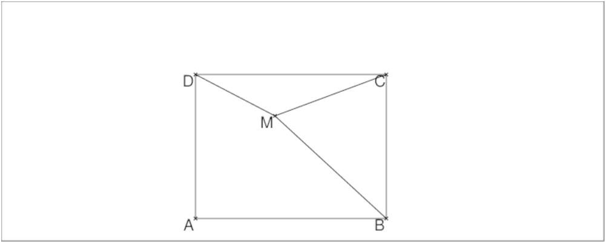
Si l’affixe de M est m+i*n, écrire les relations qui lient m,n,a,b.
Faire la construction avec Xcas.
On a donc :
0≤ m≤ 3 et 0≤ n≤ 5
On pose :
M:=point(m+i*n)
A:=point(0)
B:=point(a)
C:=point(a+i*b)
D:=point(i*b)
On tape :
longueur2(M,D)-9
On obtient :
(m)^2+(-b+n)^2-9
On tape :
longueur2(M,C)-16
On obtient :
(-a+m)^2+(-b+n)^2-16
On tape :
longueur2(M,B)-25
On obtient :
n^2+(-a+m)^2-25
Donc m,n,a,b vérifient les équations :
[(m)2+(−b+n)2=9,(−a+m)2+(−b+n)2=16,n2+(−a+m)2=25]
Donc :
m2+n2=(m)2+(−b+n)2−((−a+m)2+(−b+n)2)+n2+(−a+m)2=9−16+25=18
Le point M se trouve donc sur le cercle c de centre A et de rayon
√18.
Comme 0≤ m≤ 3 et que le point d’affixe 3+3*i est sur le cercle c,
on peut dire que M est sur l’arc π/4,π/2 (0≤ n≤ 5 sera
vérifié car √18<5).
On tape :
A:=point(0);
c:=cercle(0,3*sqrt(2),pi/4,pi/2);
supposons(m=[2.7,0,3,0.1]);
M:=point(m+i*sqrt(18-m^2));
c1:=cercle(M,5);
c2:=cercle(M,3);
B:=inter_unique(droite(y=0),c1);
D:=inter_unique(droite(x=0),c2);
C:=inter_unique(droite(x=affixe(B)),droite(y=-i*affixe(D)));
polygone(A,B,C,D);
affixe(B),affixe(C);
affichage(plotparam(u+sqrt(7+u^2)+i*(sqrt(18-u^2)+sqrt(9-u^2)),
u=0..sqrt(9),tstep=0.1),1);
trace(D);
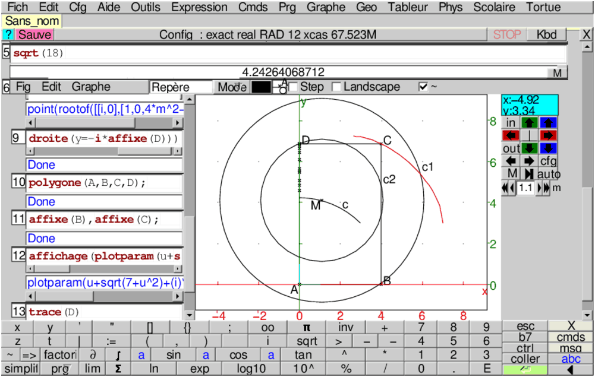
Remarque
Le problème est plus facile si on modifie les conditions.
On cherche les conditions que doivent vérifier x et y pour que l’on puisse
construire un point M, de coordonnèes (x,y), à l’intérieur du
rectangle vérifiant :
MD=3, MC=5 et MB=4.
On a alors :
x2+(y−b)2=9
(x−a)2+(y−b)2=25
(x−a)2+y2=16
Donc :
x2+(y−b)2−(x−a)2−(y−b)2+(x−a)2+y2=x2+y2=0
Donc x=0, y=0 et M se trouve en A.
Le rectangle a alors comme dimension a=4 et b=3.
Soit un triangle équilatéral ABC tel que AB=a.
On cherche la valeur de a pour que l’on puisse
construire un point M à l’intérieur du triangle ABC tel que
MA=4, MB=5 et MC=3.
Faire la construction de ABC et calculer les aires des 4 triangles :
ABC, ABM, ACM, BCM.
On pourra effectuer la rotation de centre A et d’angle π/3 qui
transforme M en N.
La solution
Considérons la rotation de centre A et d’angle π/3 qui transforme M
en N.
Le triangle AMN est isocèle de sommet A et on a :
MAN=MAC+CAN=MAC+BAM=BAC=π/3
Donc le triangle AMN est équilatéral et MN=4.
Le triangle CNM a donc pour côtés : CM=3, MN=4, CN=5.
Le triangle CNM est donc rectangle en M. et l’angle CMA=5π/6.
On a donc puisque cos(5π/6)=−√3/2, MC=3 et AM=4 :
a2=AC2=32+42−2*3*4*(−√3/2)=25+12√3.
La construction
On tape :
C:=point(3); A:=point(-4*sqrt(3)/2+4*i/2,affichage=quadrant2); B:=rotation(C,pi/3,A); triangle(A,B,C); M:=point(0); triangle_equilateral(A,M,N,affichage=1); segment(B,M); segment(C,M);
On obtient :
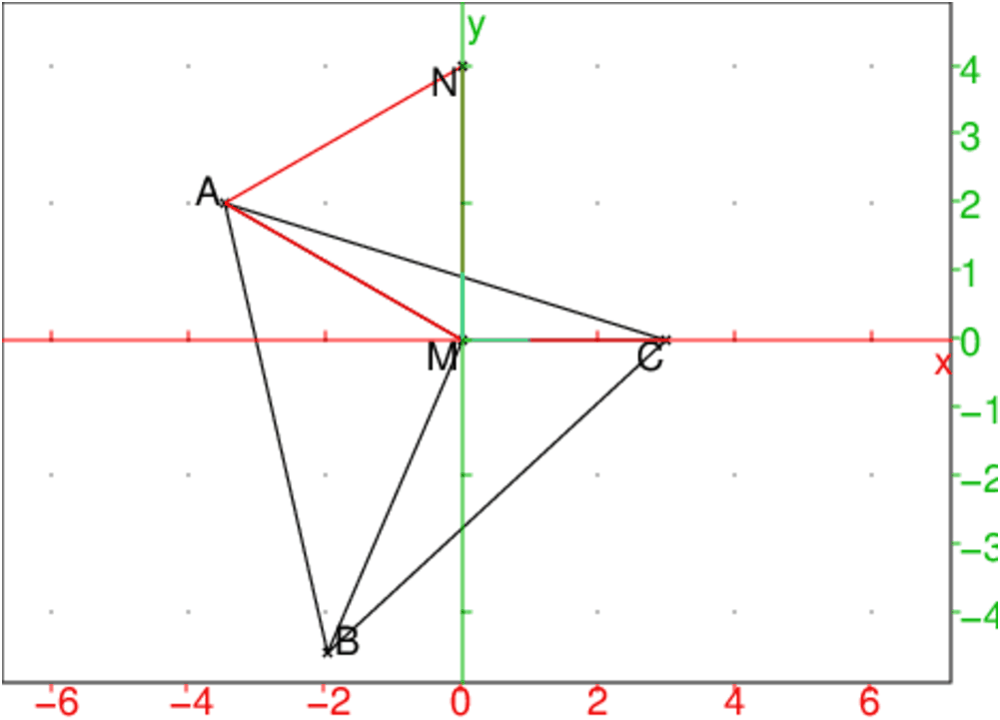
On vérifie, on tape :
normal(longueur(A,M),longueur(B,M))
On obtient :
4,5
Calcul des aires à l’aide d’un puzzle
On considère 2 exemplaires du triangle équilatéral ABC défini
ci-dessus. On découpe un des exemplaires en 3 morceaux qui sont les triangles
ABM, BCM et AMC. On obtient donc un puzzle avec les 4 pièces :
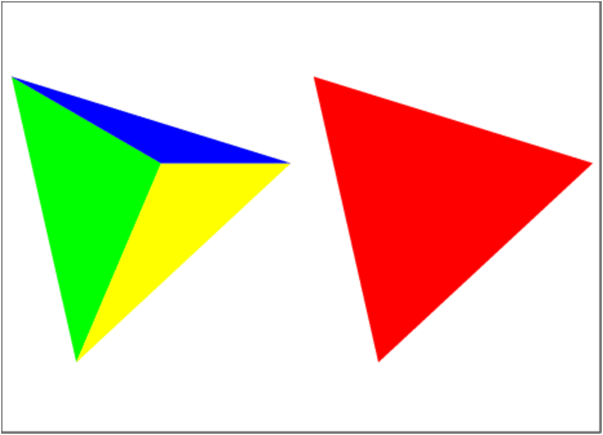
On réalise alors avec ces 4 pièces l’octogone :
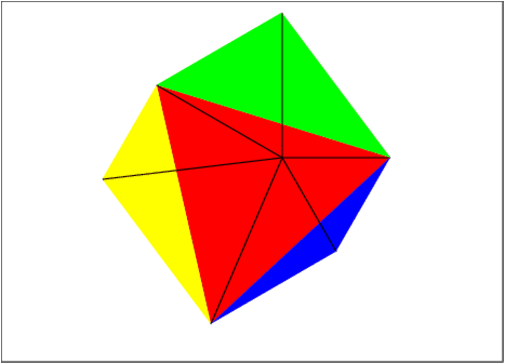
On a tracé les segments joignant M au sommet de l’octogone.
Cet octogone est compse de 3 triangles rectangles de côtés 3,4,5 et de
3 triangles èquilatéraux de côtés respectifs 3,4 et 5.
On a donc si S est l’aire de ABC :
2S=a2√3/2=3*3*2+(9+16+25)√3/4=18+25√3/2
Donc S=9+25√3/4 et on retrouve que a2=25+12√3
Soient s1,s2,s3,s4 les aires des triangles de couleurs 1 (rouge),2(vert),
3(jaune),4(bleu).
On va donc résoudre le système linéaire :
[s1−s2−s3−s4=0,s2+s3=6+25√3/4,s2+s4=9√3/4+6,s3+s4=4√3+6]
On tape :
linsolve([s1-s2-s3-s4=0,s2+s3=6+25*sqrt(3)/4,
s2+s4=9*sqrt(3)/4+6,s3+s4=4*sqrt(3)+6],[s1,s2,s3,s4])
On obtient :
[(sqrt(3)*25+36)/4,(sqrt(3)*9+12)/4,sqrt(3)*4+3,3]
On a tapé pour obtenir l’octogone :
triangle(A,B,C,affichage=1+rempli); triangle(A,C,N,affichage=2+rempli); P:=rotation(C,pi/3,M):; Q:=rotation(B,pi/3,M):; triangle(B,C,P,affichage=4+rempli)) triangle(B,A,Q,affichage=3+rempli);
Les transformations ci-dessous peuvent toujours être considérées, soit comme des fonctions (les arguments sont les paramètres servant à définir la transformation), soit comme agissant sur le dernier argument (les arguments sont les paramètres servant à définir la transformation et alorsl’objet géométrique à transformer est mis comme dernier paramètre).
Étant donné trois points A, B, C le point :
translation(C-B,A) est le transformé du point A dans la
translation de vecteur BC.
On a aussi t:=translation(C-B) est la translation de vecteur BC .
On écrira alors t(A) pour désigner le transformé du point A
dans la translation t de vecteur BC.
Par exemple si :
D:=t(A) ou si
D:=translation(C-B,A) on a :
AD=BC.
Activité
Créer un polygone quelconque ABCDE.
Créer un point F à l’extérieur de ce polygone.
Construire le polygone FGHJK translaté de ABCDE dans la translation de vecteur AF.
Faites bouger le point A et observer.
Faites bouger le point F et observer.
Étant donné deux points A, B et un nombre réel k, le point :
homothetie(B,k,A) est le transformé du point A dans
l’homothétie de centre B et de rapport k.
On a aussi h:=homothetie(B,k) est l’homothétie de centre B et de
rapport k.
Par exemple si :
C:=h(A) ou si
C:=homothetie(B,2,A), C est tel que
BC=2*BA
Activité
Créer un polygone quelconque ABCDE.
Créer un point F à l’extérieur de ce polygone.
Construire le polygone GHJKL homothétique de ABCDE dans
l’homothétie de vecteur centre F et de rapport 2.
Faites bouger le point A et observer.
Faites bouger le point F et observer.
Étant donné trois points A, B, C le point :
symetrie(droite(B,C),A) est le transformé du point A dans la
symétrie par rapport à la droite BC,
On a aussi sd:=symetrie(droite(B,C)) est la symétrie par rapport à
la droite BC,
symetrie(B,A) est le transformé du point A dans la
symétrie de centre B.
On a aussi sp:=symetrie(B) est la symétrie de centre B.
On peut aussi comme exercice de programmation définir les fonctions
Symetrie_point Symetrie_droite (symetrie est la commande de
Xcas qui réalise ces 2 fonctions).
On tape (A et M sont des points et d est une droite) :
Symetrie_point((A,M)):=A+(A-M)
Symetrie_droite(d,M):= {local N:=inter_unique(Perpendiculaire(M,d),d);Symetrie_point(N,M);}
Étant donné deux points A, B et un réel u, le point :
rotation(B,u,A) est le transformé du point A dans la
rotation de centre B et d’angle de mesure u radians (ou degrés selon
la configuration du CAS menu Cfg->Configuration du CAS).
On a aussi r:=rotation(B,u) est la rotation de centre B et d’angle
de mesure u radians (ou degrés selon la Configuration du CAS menu
Cfg).
Étant donné trois points A, B, C le point :
projection(droite(B,C),A) est la projection orthogonale du point A
sur la droite BC.
On a aussi p:=projection(droite(B,C)) est la projection orthogonale sur
la droite BC.
Étant donné deux points A, B, un réel k et un réel u,
le point :
similitude(B,k,u,A) est le transformé du point A dans la
similitude de centre B, de rapport k et d’angle mesure u radians
(ou degrés selon la configuration du CAS menu
Cfg->Configuration du CAS).
On a aussi s:=similitude(B,k,u) est la similitude de centre B, de
rapport k et d’angle mesure u radians (ou degrés selon la configuration
du CAS menu Cfg->Configuration du CAS).
Étant donné deux points A, B, un réel k le point :
inversion(C,k,A) est le transformé du point A dans l’inversion
de centre C, de rapport k.
Par exemple si :
A1:=inversion(C,2,A), A1 est tel que
CA1*CA=2.
inversion(C,k,M) est donc le point défini par:
point(C+k*conj(inv(M-C)))
On a aussi inver:=inversion(C,k) est l’inversion de centre C,
de rapport k.
L’instruction lieu permet de tracer le lieu d’un point M, lorsque
ce point M est fonction d’un point P pouvant se déplacer sur un
objet géométrique G et si on a défini P par
P:=element(G)).
Remarque :
Il faut que les paramètres de lieu soient des noms de variables.
Donc pour obtenir le lieu d’un point M, il faut avoir défini
ce point par une affectation à un nom de variable, par exemple
M:=....
On écrit alors :
lieu(M,P)
Exemple 1 :
Lieu du centre de gravité du triangle ABC quand A se déplace
sur une parallèle à BC.
Ici on cherche le lieu du centre de gravité du triangle PBC lorsque P
se déplace sur la parallèle à BC passant par A.
On clique pour obtenir trois points A, B, C et on tape :
D:=parallele(A,droite(B,C)); P:=element(D); G:=isobarycentre(P,B,C); lieu(G,P);
lieu(G,P) trace le lieu du point G en fonction de P.
Si l’on veut pouvoir animée la figure on tape la liste des instructions
qui se trouve dans le fichier lieu1, on clique pour obtenir
trois points A, B, C puis, on fait
Charger session du
menu Fich de Xcas et on selectionne lieu1 du répértoire
examples/geo pour exécuter ce fichier) :
Ou on clique pour créer trois points A, B, C et on tape :
D:=parallele(A,droite(B,C)); t:=element(-5..5) P:=element(D,t); G:=isobarycentre(P,B,C); lieu(G,P);
ainsi lorsqu’on déplace la barre verticale indiquant la valeur de t,
on voit se déplacer les deux points P et G simultanément.
Exemples 2 et 3 :
Soient deux points A et B et C1 le cercle
de diamètre A B. Soit O le centre de ce cercle et C un point variable de ce cercle.
Soit N l’intersection de la tangente en C
à C1 avec la parallèle à AC passant par O.
Trouver le lieu de N quand C varie.
La liste des instructions pour trouver ce lieu se trouve dans le
fichier lieu2, on clique pour obtenir deux points A, B puis, on
fait Charger session du
menu Fich de Xcas et on selectionne lieu2 du répértoire
examples/geo pour exécuter ce fichier.
Ou on clique pour créer deux points A, B et on tape :
C1:=cercle(A,B); O:=milieu(A,B); C:=element(C1); T:=tangent(C1,C); D2:=parallele(O,droite(A,C)); M:=inter(T,D2); N:=M[0]; lieu(N,C);
Attention M est une liste ayant un seul élément et
on ne peut pas écrire lieu(M[0],C) car M[0] n’est pas un nom de
variable.
On peut aussi écrire des instructions sans utiliser la fonction
tangent et en rajoutant t:=element(0..2*pi); (c’est le fichier
lieu3) :
On clique pour créer deux points A, B.
C1:=cercle(A,B); O:=milieu(A,B); t:=element(0..2*pi); C:=element(C1,t); D1:=perpendiculaire(C,droite(O,C)); D2:=parallele(O,droite(A,C)); M:=inter(D1,D2); N:=M[0]; lieu(N,C);
Les triangles NOC et NOB sont égaux car leurs angles O sont
égaux à l’angle CAB et à l’angle OCA.
Donc NB est perpendiculaire à AB.
La réciproque est évidente car si N se trouve sur la perpendiculaire
à AB en B, on méne par N l’autre tangente au cercle pour
définir le point C.
Les triangles rectangles NOC et NOB sont
égaux et donc ON est parallèle à AC.
Exemple 4 :
Une droite variable D1 coupe les cotés AB,AC,BC du triangle
ABC en D,E,M.
Les cercles circonscrits aux triangles BDM et ECM se coupent en
P et M. Trouver le lieu de P quand D1 varie.
On peut faire éxécuter le fichier lieu4 (on clique pour obtenir trois points A, B, C puis on fait Charger session du
menu Fich de Xcas et on selectionne lieu4 du répértoire
examples/geo pour exécuter ce fichier) ou,
on clique pour obtenir trois points A, B, C et on tape :
Triangle(A,B,C);
u:=element(-4..4);
M:=element(droite(B,C),u);
D:=element(droite(A,B));
D1:=droite(D,M);
E:=(inter(droite(A,C),D1))[0];
C1:=circonscrit(B,D,M);
C2:=circonscrit(E,C,M);
L:=inter(C1,C2);
if (affixe(L[0])==affixe(M)) {Q:=L[1];} else {Q:=L[0];};
P:=Q;
lieu(P,M);
On remarquera que l’on est obligé d’utiliser un point intermédiaire Q
pour pouvoir définir P par une affectation.
Le lieu de P est le cercle circonscrit au triangle ABC car l’angle
l’angle P du triangle PBC est égal à l’angle A
du triangle ABC en écrivant des égalités d’angles inscrits.
Exemple 5 :
Lieu de l’orthocentre du triangle ABC quand A se déplace
sur une parallèle à BC.
Ici on cherche le lieu de l’orthocentre du triangle MBC lorsque M
se déplace sur la parallèle à BC passant par A.
On peut faire éxécuter le fichier lieu5 (on clique pour obtenir
trois points A, B, C puis, on fait Charger session du
menu Fich de Xcas et on selectionner lieu5 du répértoire
examples/geo pour exécuter ce fichier) ou,
on clique pour obtenir trois points A,B,C et on tape :
D:=parallele(A,droite(B,C));
M:=element(D);
H:=(inter(perpendiculaire(M,droite(C,B)),
perpendiculaire(C,droite(M,B))))[0] ;
lieu(H,M);
Le lieu est une parabole passant par B et C et de sommet S orthocentre du triangle isocèle PBC (P sur la médiatrice de BC et sur la droite D). On peut à la main avoir assez facilement l’équation de cette parabole ...mais trouver ce lieu en géométrie pure est plus difficle!
Exemple 1 :
Lieu du centre de gravité du triangle ABC quand A se déplace
sur une parallèle à BC.
Ici on cherche le lieu du centre de gravité du triangle PBC lorsque P
se déplace sur la parallèle à BC passant par A.
On clique pour obtenir trois points A, B, C et on tape :
D:=parallele(A,droite(B,C)); P:=element(D); G:=isobarycentre(P,B,C); lieu(G,P);
lieu(G,P) trace le lieu du point G en fonction de P.
Si l’on veut pouvoir animée la figure on tape la liste des instructions
qui se trouve dans le fichier lieu1, on clique pour obtenir
trois points A, B, C puis, on fait
Charger session du
menu Fich de Xcas et on selectionne lieu1 du répértoire
examples/geo pour exécuter ce fichier) :
Ou on clique pour créer trois points A, B, C et on tape :
A:=point([-3,3/2,'affichage'=0]); B:=point([-1,-3/2,'affichage'=0]); C:=point([3,9/4,'affichage'=0]); D:=parallele(A,droite(B,C)); P:=element(D); G:=isobarycentre(P,B,C); lieu(G,P);
ainsi lorsqu’on déplace la barre verticale indiquant la valeur de t,
on voit se déplacer les deux points P et G simultanément.
lieu(G,P); renvoie droite(y=((15*x)/16+17/16))
Exemples 2 et 3 :
Soient deux points A et B et C1 le cercle
de diamètre A B. Soit O le centre de ce cercle et C un point variable de ce cercle.
Soit N l’intersection de la tangente en C
à C1 avec la parallèle à AC passant par O.
Trouver le lieu de N quand C varie.
La liste des instructions pour trouver ce lieu se trouve dans le
fichier lieu2, on clique pour obtenir deux points A, B puis, on
fait Charger session du
menu Fich de Xcas et on selectionne lieu2 du répértoire
examples/geo pour exécuter ce fichier.
Ou on clique pour créer deux points A, B et on tape :
C1:=cercle(A,B); O:=milieu(A,B); C:=element(C1); T:=tangent(C1,C); D2:=parallele(O,droite(A,C)); M:=inter(T,D2); N:=M[0]; lieu(N,C);
Attention M est une liste ayant un seul élément et
on ne peut pas écrire lieu(M[0],C) car M[0] n’est pas un nom de
variable.
On peut aussi écrire des instructions sans utiliser la fonction
tangent et en rajoutant t:=element(0..2*pi); (c’est le fichier
lieu3) :
On clique pour créer deux points A, B.
C1:=cercle(A,B); O:=milieu(A,B); C:=element(C1); D1:=perpendiculaire(C,droite(O,C)); D2:=parallele(O,droite(A,C)); M:=inter(D1,D2); N:=M[0]; lieu(N,C);
lieu(N,C) renvoie droite(y=((2*x)/3-5/6))
Les triangles NOC et NOB sont égaux car leurs angles O sont
égaux à l’angle CAB et à l’angle OCA.
Donc NB est perpendiculaire à AB.
La réciproque est évidente car si N se trouve sur la perpendiculaire
à AB en B, on méne par N l’autre tangente au cercle pour
définir le point C.
Les triangles rectangles NOC et NOB sont
égaux et donc ON est parallèle à AC.
Exemple 4 :
Une droite variable D1 coupe les cotés AB,AC,BC du triangle
ABC en D,E,M.
Les cercles circonscrits aux triangles BDM et ECM se coupent en
P et M. Trouver le lieu de P quand D1 varie.
On peut faire éxécuter le fichier lieu4 (on clique pour obtenir trois points A, B, C puis on fait Charger session du
menu Fich de Xcas et on selectionne lieu4 du répértoire
examples/geo pour exécuter ce fichier) ou,
on clique pour obtenir trois points A, B, C et on tape :
triangle(A,B,C);
u:=element(-4..4);
M:=element(droite(B,C),u);
D:=element(droite(A,B));
D1:=droite(D,M);
E:=(inter(droite(A,C),D1))[0];
C1:=circonscrit(B,D,M);
C2:=circonscrit(E,C,M);
L:=inter(C1,C2);
if (affixe(L[0])==affixe(M)) {Q:=L[1];} else {Q:=L[0];};
P:=Q;
lieu(P,M);
On remarquera que l’on est obligé d’utiliser un point intermédiaire Q
pour pouvoir définir P par une affectation.
Le lieu de P est le cercle circonscrit au triangle ABC car l’angle
l’angle P du triangle PBC est égal à l’angle A
du triangle ABC en écrivant des égalités d’angles inscrits.
Exemple 5 :
Lieu de l’orthocentre du triangle ABC quand A se déplace
sur une parallèle à BC.
Ici on cherche le lieu de l’orthocentre du triangle MBC lorsque M
se déplace sur la parallèle à BC passant par A.
On peut faire éxécuter le fichier lieu5 (on clique pour obtenir
trois points A, B, C puis, on fait Charger session du
menu Fich de Xcas et on selectionner lieu5 du répértoire
examples/geo pour exécuter ce fichier) ou,
on clique pour obtenir trois points A,B,C et on tape :
D:=parallele(A,droite(B,C));
M:=element(D);
H:=(inter(perpendiculaire(M,droite(C,B)),
perpendiculaire(C,droite(M,B))))[0] ;
lieu(H,M);
Le lieu est une parabole passant par B et C et de sommet S orthocentre du triangle isocèle PBC (P sur la médiatrice de BC et sur la droite D). On peut à la main avoir assez facilement l’équation de cette parabole ...mais trouver ce lieu en géométrie pure est plus difficle!
Exercice1
Soient 2 points fixes A et B.
On considère l’ensemble Γ des cercles c passant par A et B.
Pour c ∈ Γ, lieu des points M de c qui ont une tangente en M
perpendiculaire à AB.
On tape dans un niveau de géométrie 2d (version 1) :
A:=point(-1); B:=point(1); P:=element(droite(x=0)); c:=cercle(P,A-P); M:=translation(longueur(A,P),P); N:=translation(-longueur(A,P),P); lieu(M,P); lieu(N,P);
ou on tape dans un niveau de géométrie 2d (version 2) :
A:=point(-1); B:=point(1); assume(u=[0,-5,5,0.1])); P:=element(droite(x=0),u); c:=cercle(P,sqrt(u^2+1)); L:=inter(droite(y=u),c); M:=L[0]; N:=L[1]; lieu(M,u); lieu(N,u);
Pour la version 1 (resp pour la version 2) lieu(M,P); (resp
lieu(M,u);) renvoie :
plotparam((i)*‘ t‘+sqrt(1+(-‘ t‘)^2),‘ t‘=-10.0..10.0)
et pour la version 1 (resp pour la version 2) lieu(N,P); (resp
lieu(N,u);) renvoie :
plotparam((i)*‘ t‘-sqrt(1+(-‘ t‘)^2),‘ t‘=-10.0..10.0)
et le dessin correspondant :
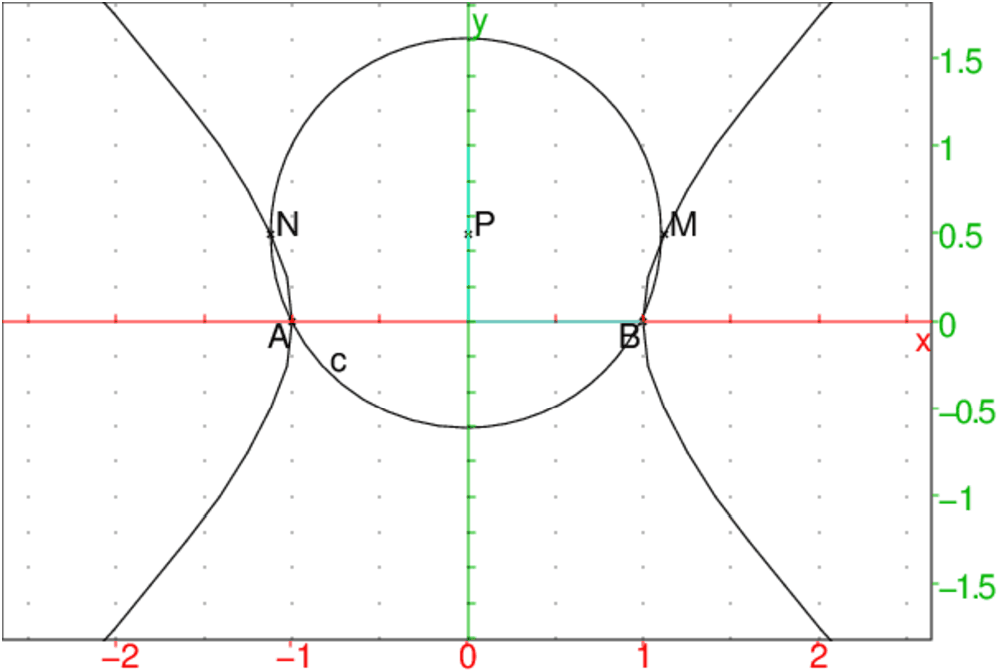
On peut aussi taper en utilisant directement plotparam :
supposons(u=[0,-5,5,0.1]) P:=point(i*u) c:=cercle(P,sqrt(u^2+1)); L:=inter(droite(y=u),c):; M:=L[0];N:=L[1]; plotparam(affixe(M),u); plotparam(affixe(N),u);
On obtient le dessin ci-dessus.
On tape :
affixe(M)
On obtient :
(i)*u+sqrt(u^2+1)
On tape :
affixe(N)
On obtient :
(i)*u-sqrt(u^2+1)
Exercice2
Soient un cercle c de centre O et 2 points fixes A et B situés sur un
diamètre de c.
Soit un diamètre variable PQ de c.
Lieu de M intersection de AP et BQ.
On tape :
c:=cercle(0,1) A:=point(-4); B:=point(-2); u:=element(-pi..pi); P:=element(c,u); Q:=-P; M:=inter_unique(droite(A,P),droite(B,Q)); lieu(M,P)
On obtient :
cercle(point(-8/3,0),1/3)
On tape :
droite(A,0);segment(P,A);segment(M,Q)
segment(0,P);segment(M,point(-8/3))
On obtient le cercle homothétique de c dans l’homothétie de centre A et
de rapport ici 1/3.
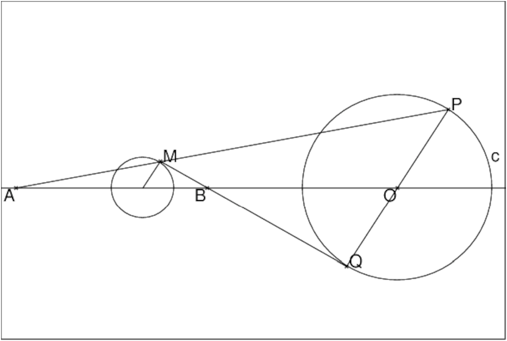
On a en effet en appliquant le théoréme de Ménélaüs au triangle OAP on a :
M,B,Q alignés est équivalent à :
MA/MP· QP/QO· BO/BA=1
On a QP/QO=2.
Si BA/BO=k alors
MA/MP=k/2 donc
AP/AM=1+MP/AM=1−2/k=k−2/k
Ce qui prouve que M se déduit de P dans l’homothétie de centre A et de rapport : k/k−2
Dans l’exemple on a k=−1 donc le rapport de l’homothétie est bien : 1/3
Étant donné trois points A, B et C les commandes suivantes permettent de tracer des triangles :
Les commandes suivantes permettent de tracer des quadrilatères :
Soient n points (ou n nombres complexes représentant l’affixe de ces points).
polygone avec comme argument la liste ou la séquence de ces n points.
polygone renvoie et trace le polygone ayant pour sommets ces n points.
polygone(0,1,1+i,i) trace le carré de sommets 0,1,1+i,i.
polygone(makelist(x->exp(i*pi*x/3),0,5,1)) trace l’hexagone de centre 0 et de sommets 1,ei*pi/3...e5*i*pi/3
Les commandes précédentes peuvent tracer des triangles ou des
quadrilatères sans avoir tous les sommets, mais on peut avoir besoin des
sommets de ces triangles ou de ces quadrilatères.
Si T est un triangle (ou un polygone) sommets(T) renvoie la
liste circulaire des sommets de T, ainsi sommets(T)[0] et
sommets(T)[3]
désigne le premier sommet de T (attention aux indices!!!).
Exemple :
On clique pour avoir deux points A et B.
On tape :
T:=triangle_equilateral(A,B)
C:=sommets(T)[2]
Ainsi le triangle ABC est équilatéral.
On tape :
Q:=carre(A,B)
E:=sommets(T)[2]
F:=sommets(T)[3]
Ainsi, ABEF est un carré.
carred(A,B):={
local C,D;
C:=B+i*(B-A);
D:=A+i*(B-A);
return ([segment(A,B),segment(B,C),
segment(C,D),segment(D,A)]);
};
AttentionOn peut ensuite vérifier avec la commande carre.
Soit un quadrilatère quelconque ABCD et M,N, P, Q les milieux respectifs de AB, BC, CD, DA.
Il est conseillé de faire une figure avec Xcas : on ouvre l’écran de géométrie et on clique sur 4 points A, B, C, E on modifie la ligne E:=... en D:=... puis on tape :
M:=milieu(A,B); N:=milieu(C,B); P:=milieu(C,D); Q:=milieu(A,D); quadrilatere(A,B,C,D,couleur=rouge); segment(A,C,couleur=vert); segment(B,D,couleur=vert); quadrilatere(M,N,P,Q);
Puis on se met en mode Pointer et on déplace le point D avec la
souris et on observe......
Cette session se trouve parmi les exemples sous le nom milieu.xws.
La démonstration :
Répondre par vrai ou faux en donnant des exemples lorsque la proposition est fausse et une démonstration se référant à l’exercice lorsque la proposition est vraie.
isopolygone permet de tracer des polygones réguliers ayant k cotés.
Les arguments sont :
- soit deux sommets (deux points ou deux complexes) et le nombre de cotés
(un entier positif k),
- soit le centre du polygone et un sommet (deux points ou deux complexes) et
un entier négatif −k (si k le nombre de cotés),
Sans se servir de la commande isopolygone tracer :
hexagone(A,B):={
local l,C;
l:=[];
for (j:=1;j<=6;j++){
l:=append(l,segment(A,B));
C:=B+(1+i*sqrt(3))*(B-A)/2;
//ou C:=rotation(B,4*pi/3,A)
A:=B;
B:=C;
}
return(l);
};
Ainsi hexagone(A,B) et hexagone(B,A) répondent à la question.C:=similitude(B,1/2/sqrt(3),pi/2,A) D:=similitude(B,1/2/sqrt(3),-pi/2,A) hexagone(C,D)3/ C se déduit de A par similiude de centre B et D est le symëtrique de C par rapport à B puis on utilise la fonction hexagone précédente.
C:=similitude(B,1/sqrt(3),pi/6,A) D:=symetrie(B,C) hexagone(C,D)
Ngone(A,B,n):={
local l,C;
l:=[];
for (j:=1;j<=n;j++){
l:=append(l,segment(A,B));
C:=rotation(B,(n+2)*pi/n,A)
A:=B;
B:=C;
}
return(l);
};
Étant donné trois points A, B et C les commandes suivantes permettent de tracer les droites remarquables du triangle ABC :
Étant donné trois points A, B et C les commandes suivantes permettent de tracer les cercles remarquables du triangle ABC :
arc permet de tracer un arc défini par deux points et la
mesure de son angle au centre α (−2π ≤ α ≤ 2π) le
signe de α donne le sens de parcours.
Pour avoir l’arc capable AB de mesure u il faut taper :
arc(A,B,2*(-pi+u)) si π>u>0 ou
arc(A,B,2*(pi+u)) si −π<u<0 .
Activité, sans se servir de la commade arc
Soient deux points A et B.
Le lieu des points M d’où l’on voit un segment AB sous un angle u
donné (u ≠ π+2*k*π et u ≠ 2*k*π) est un arc de cercle ou deux arcs de cercle selon que ;
u=mesure(MA,MB) ou que u=mesure(AMB).
On tape :
Arcaporient(A,B,u):={
AB:=segment(A,B);
O1:=inter(mediatrice(A,B),rotation(A,pi/2-u,droite(A,B)))[0];
if (u>0) return(cercle(O1,A-O1,arg(B-O1),arg(B-O1)+2*(pi-u)));
return(cercle(O1,A-O1,arg(B-O1),arg(B-O1)+2*(-pi-u)));
};
Arcap(A,B,u):={
local L;
AB:=segment(A,B);
O1:=inter(mediatrice(A,B),rotation(A,pi/2-u,droite(A,B)))[0];
O2:=inter(mediatrice(A,B),rotation(A,-pi/2+u,droite(A,B)))[0];
L:=[cercle(O1,A-O1,arg(B-O1),arg(B-O1)+2*(pi-u))];
L:=append(L,cercle(O2,A-O2,arg(A-O2),arg(A-O2)+2*(pi-u)));
return(L);
};
Exercice : La droite de Steiner
Soient un triangle quelconque ABC ,H son orthocentre et c son cercle
circonscrit.
Si un point A est à une distance d du centre d’un cercle C de rayon
r, la puissance de A par rapport au cercle C est égale à d2−r2.
On tape :
puissance(cercle(0,1+i),3+i)
On obtient :
8
En effet : r=√2 et d=√10 donc d2−r2=8
On peut aussi faire écrire la fonction puissancc comme exercice de
programmation.
Puissancc(A,C):={
local O,r,d2;
O:=centre(C);
r:=rayon(C);
d2:=longueur2(A,O);
return(d2-r^2);
};
L’axe radical de deux cercles C1 et C2 est le lieu des points qui ont
même puissance par rapport à C1 et à C2
On tape :
axe_radical(cercle(0,1+i),cercle(1,1+i)))
On obtient :
Le tracé de la droite x=1/2
En effet : la droite x=1/2 est la médiatrice du segment [0;1]
On peut aussi faire écrire la fonction axeradical comme exercice de
programmation.
Axe_radical(C1,C2):={
local O1,O2,r1,r2,H,t;
O1:=centre(C1);
O2:=centre(C2);
r1:=rayon(C1);
r2:=rayon(C2);
t:=-(r2^2-r1^2)/2/longueur2(O2,O1)+1/2;
H:=O1+(O2-O1)*t;
return(perpendiculaire(H,droite(O1,O2)));
};
Quatre points A, B, C, D sont en division harmonique si on a :
| =− |
| =k |
On dit aussi que C et D divisent le segment AB dans le rapport k et que
le point D est le conjugué harmonique de C par rapport à A et B.
On écrit les fonctions conj_harmonic1 qui étant donné les points
A,B et C sur la droite AB détermine le point D conjugué harmonique
de C par rapport à A et B.
On suppose que C sur la droite AB et on écrit :
conj_harmonic1(A,B,C):={
local D;
D:=A+(B-A)*(C-A)/((C-B)+(C-A));
return(D);
};
On écrit la fonction conj_harmonic2 qui définit les points C et D qui divise le segment AB dans le rapport k :
conj_harmonic2(A,B,k):={
local C,D;
C:=A+k/(1-k)*(A-B);
D:=A-k/(1+k)*(A-B);
return([C,D]);
};
Remarque
Si C est le point qui divise le segment AB dans le rapport k, on a :
CA/CB=k donc CA−kCB=0
donc C est le barycentre de A affecté du coefficient 1 et B du
coefficient −k. De même, si D est le point qui divise le segment AB
dans le rapport −k, D est le barycentre de A affecté du coefficient 1
et B du coefficient k (si 1+k≠ 0 et si 1−k ≠ 0).
On tape par exemple:
k:=2
C:=barycentre([[A,1],[B,-k]]))
D:=barycentre([[A,1],[B,k]])
On remarquera aussi que C:=element(droite(A,B),t); signifie :
AC=t*AB donc :
C-A:=t*(B-A) soit C:=(1-t)*A+t*B.
On a donc :
CA/CB=t/t−1=k
On écrit la fonction conj_harmonic3 en se servant de la commande
element :
conj_harmonic3(A,B,k):= {
local C,D,t;
t:=k/(k-1);
C:=element(droite(A,B),t);
D:=A+t/(2*t-1)*(B-A);
return([point(C),point(D)]);
}
Activité
Soient trois points A,B,M alignés. Construire géométriquement
le point N conjugué harmonique de M par rapport à A et B.
Réponse
On définit 3 points A,B,C non alignés.
On trace la droite MC et la parallèle d1 (resp d2) à cette droite
passant par A (resp B).
La droite BC coupe d1 en K et la droite AC coupe d2 en L
N est alors l’intersection de la droite KL avec la droite AB.
En effet :
donc puisque BL/KA=−BL/AK on a :
MA/MB=−BN/AN.
On tape :
A:=point(-2,-2.8); B:=point(2,-2.8); C:=point(0,-1); d0:=droite(A,B):;d0; t:=element(0..1,0.3); M:=element(d0,t); d:=droite(M,C,affichage=1); d1:=parallele(A,d,affichage=1); d2:=parallele(B,d,affichage=1); D1:=droite(A,C):; D2:=droite(B,C):; K:=inter(d1,D2)[0]; L:=inter(d2,D1)[0]:; legende(L,"L",quadrant2); D3:=droite(K,L,affichage=2); N:=affichage(inter(d0,D3)[0],1+epaisseur_point_2);
On obtient :
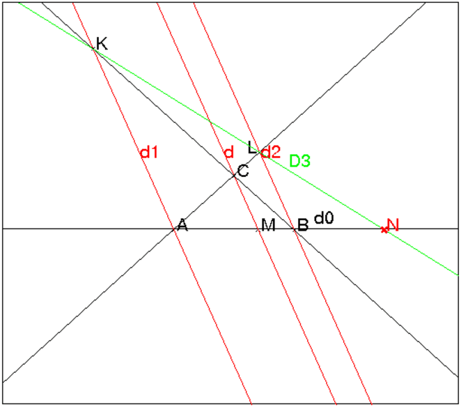
Autre réponse
On définit 3 points A,B,C non alignés.
On définit les droites d1=CA, d2=CB, d3=CM.
On peut alors tracer la droite d4 pour que le faisceau d1, d2, d3, d4
soit harmonique.
On trace D1 la parallèle à la droite d1 passant par B qui coupe CM
en K. On définit L sur D1 tel que BK=BL et L ≠ K.
On trace CL qui coupe AB en N.
A:=point(-2,-2); B:=point(3,-2); C:=point(0.13,-1); d0:=droite(A,B):;d0; t:=element(0..1,0.3); M:=element(d0,t); d3:=droite(C,M):;d3; d1:=droite(C,A); d2:=droite(C,B):;d2; D1:=parallele(B,d1,affichage=1); K:=inter(d3,D1)[0]; L:=inter(cercle(B,K-B),D1)[1]; d4:=droite(C,L,affichage=2); N:=affichage(inter(d0,d4)[0],1+epaisseur_point_2);
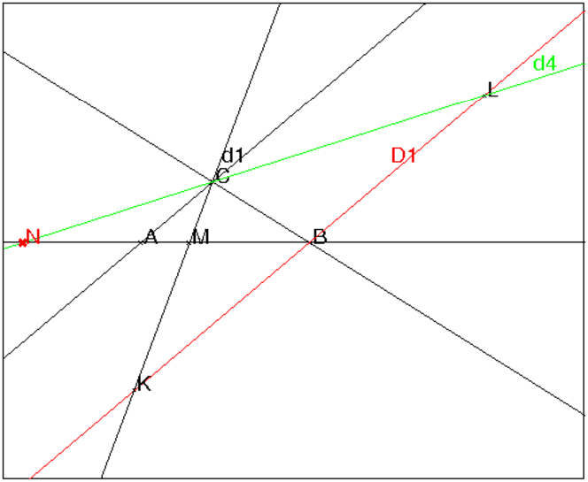
Le lieu des conjugués harmoniques d’un point A par rapport à deux droites D1,D2 est une droite d vérifiant :
Soient un point S et trois points A,I,J alignés.
Soit M un point variable de la droite SI. La droite AM coupe la droite
SJ en N.
On cherche le lieu de K intersection de IN et de JM lorsque M se
déplace sur la droite SI.
On tape :
S:=point(1+5i,affichage=1); A:=point(-4,affichage=1); I:=point(0,affichage=1); J:=point(7,affichage=1); droite(A,J); d:=droite(I,S,affichage=1); droite(S,J,affichage=1); t:=element((-2) .. 2,0.24,0.04) M:=element(d,t); N:=inter_droite(droite(A,M),droite(S,J),affichage=2); droite(A,M,affichage=2); segment(I,N); segment(J,M); K:=inter_droite(droite(I,N),droite(J,M),affichage=4); L:=lieu(K,M):; affichage(L,4+epaisseur_ligne_2); B:=conj_harmonique(I,J,A); droite(S,B);
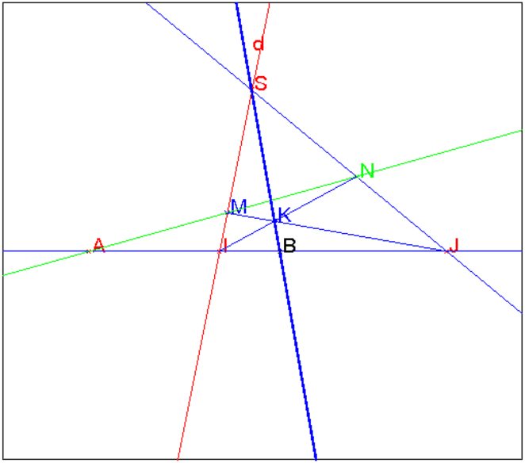
On remarque que si B est le conjugué harmonique de A par rapport à I et J, le lieu L de K est la droite SB .
Le lieu de K est la polaire de A par rapport à CE et FG. En effet si CE et FG se coupent en S, si le point L est le conjugué harmonique de A par rapport à I et J et si le point P est le conjugué harmonique de A par rapport à M et N, la polaire de A par rapport à CE et FG passe par S, L et P, et la polaire de A par rapport à IN et JM passe par K, L et P donc, K se trouve sur la polaire de A par rapport à CE et FG.
On dit que 2 points A et B sont conjugués par rapport à un cercle
ou une conique (C) si ils forment une division harmonique avec les points E
et F où la droite AB coupe (C).
Le lieu des conjugués harmoniques d’un point A par rapport à un cercle
ou une conique C est une droite d appelée polaire de A par
rapport à (C). Si la polaire d coupe (C) en T1 et T2 alors les
droites AT1 et AT2 sont tangentes à (C).
Lorsque (C) est un cercle ou une conique propre à toute droite d on peut
faire correspondre un point A qui admet d comme polaire par rapport à
(C) : on dit que A est le pôle de d.
Si la conique est dégénérée en deux droites OU et OV chaque droite
passant par O est la polaire d’une infinité de points alignés avec O
(cf 1.16).
On va travailler en coordonnèes homogènes en dimension 2 :
un point M(x,y) a pour coordonnèes homogènes X,Y,T avec
x=X/T et y=Y/T.
Si l’équation de la conique est :
F(X,Y,T)=0 alors F est une forme quadratique de matrice Q et on a,
si M=[X,Y,T] :
| F(X,Y,T)=M*Q*M=0 |
La polaire du point A=[Xa,Ya,Ta] a pour équation :
| X*FX′(Xa,Ya,Ta)+Y*FY′(Xa,Ya,Ta)+T*FT′(Xa,Ya,Ta)=0 |
ou encore :
| Xa*FX′(X,Y,T)+Ya*FY′(X,Y,T)+Ta*FT′(X,Y,T)=0 |
ou encore :
| M*Q*A=0 |
Définitions
Une droite d d’équation ux+vy+h=0 a pour coordonnées tangentielles
u,v,h.
L’équation tangentielle d’une courbe (C) est la
condition nécessaire et suffisante pour que la droite d de coordonnées
tangentielles [u,v,h] lui soit tangente.
Équation tangentielle de la conique (C)
L’équation tangentielle de la conique (C) d’équation
F(X,Y,T)=M*Q*M=0 est :
| G(u,v,h)=[u,v,h]*inv(Q)*[u,v,h] |
Équation tangentielle de la polaire
L’équation tangentielle de la polaire de A=[Xa,Ya,Ta] par rapport à la
conique (C) est : A*Q.
Coordonnées du pôle
Soit d une droite de coordonnées tangentielles ud,vd,hd (donc
d’équation ux+vy+h=0), le pôle de d par rapport
à (C) a pour coordonnées homogènes :
| Gu′(ud,vd,hd),Gv′(ud,vd,hd)Gh′(ud,vd,hd) |
ou encore si Q1=det(Q)*inv(Q)
| [ud,vd,hd]*Q1 |
Soient la conique C définie par x2+2x*y+2*y2−2*x=0, la droite db
d’équation x+3y−1=0 et A le point 2+i.
Trouver la polaire da de A par rapport à C etle pôle B de db
par rapport à C.
On tape :
q1:=x^2+2*x*y+2*y^2-2*x
q:=numer(subst(q1,[x,y]=[X/T,Y/T]))
On obtient :
X^2-2*X*T+2*X*Y+2*Y^2
On tape :
Q:=q2a(q,[X,Y,T])
On obtient :
[[1,1,-1],[1,2,0],[-1,0,0]]
On tape :
Q1:=det(Q)*inv(Q)
On obtient :
[[0,0,2],[0,-1,-1],[2,-1,1]]
On tape :
M:=[X,Y,T]
U:=[u,v,h]
A:=[2,1,1]
da:=A*Q*M
On obtient :
2*X+4*Y-2*T
La polaire da de A par rapport à C a donc pour équation :
x+2y−1=0.
On tape :
A*Q
On obtient :
[2,4,-2]
La polaire da de A par rapport à C a donc pour équation tangentielle
[2,4,-2] c’est à dire pour équation x+2y−1=0.
On tape :
db:=[1,3,-1]
B:=db*Q1
On obtient :
[-2,-2,-2]
Le pôle B de db par rapport à C a donc pour coordonnées :
(1,1).
Pour avoir l’intersection i1 et i2 de db avec C, on tape :
solve(normal(subst(x^2+2*x*y+2*y^2-2*x,x=1-3y))=0,y)
On obtient :
[1/5*(-1-sqrt(6)),1/5*(-1+sqrt(6))]
Les points d’intersection i1 et i2 sont donc les points d’affixe z1
et z2 avec :
z1:=1+1/5*(-1-sqrt(6))*(-3+i), z2:=1+1/5*(-1+sqrt(6))*(-3+i)
Pour avoir l’équation tangentielle de la conique C, on tape :
U:=[u,v,h]
G:=normal(U*Q1*U)
On obtient :
h^2+4*h*u-2*h*v-v^2
On tape pour avoir l’équation tangentielle des tangentes à C passant par A (on choisit h=1) :
normal(solve(subst([G=0,U*A=0],h=1),[u,v]))
On obtient :
[[(-sqrt(3)+1)/2,sqrt(3)-2],[(sqrt(3)+1)/2,-sqrt(3)-2]]
Les tangentes à C passant par A ont donc pour équation :
(−√3+1)x/2+(√3−2)y+1=0 et (√3+1)x/2−(√3+2)y+1=0
On tape :
plotimplicit(q1,[x,y]);a:=point(2+i);b:=point(1+i);
t1:=droite((1-sqrt(3))/2*x+y*(-2+sqrt(3))+1=0,affichage=1);
t2:=droite((1+sqrt(3))/2*x-y*(2+sqrt(3))+1=0,affichage=1);
db:=droite(x+3y-1=0);da:=droite(x+2y-1=0);
segment(z1,b,affichage=4);segment(z2,b,affichage=4);
si1:=point(z1,affichage=4);i2:=point(z2,affichage=4);
On obtient :
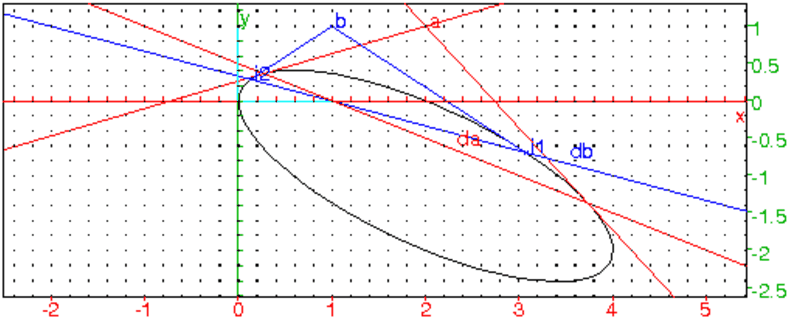
On dit que 2 points A et B sont conjugués par rapport à une sphère ou
une quadrique (S) si ils forment une division harmonique avec les points E
et F où la droite AB coupe (S).
Le lieu des conjugués harmoniques d’un point A par rapport à une sphère
ou une quadrique (S) est un plan P appelée plan polaire de A par
rapport à (S). Si le plan polaire P coupe (S) en la courbe T alors
les droites joignant A à un point de T forment un cône tangent
à (S).
Lorsque (S) est une sphère ou une quadrique propre, à tout plan P on
peut faire correspondre un point A qui admet P comme polaire par rapport
à (S) : on dit que A est le pôle de P.
On va travailler en coordonnèes homogènes :
en dimension 3 : X,Y,Z,T avec x=X/T, y=Y/T et z=Z/T.
Si l’équation de la quadrique est :
F(X,Y,Z,T)=0 alors F est une forme quadratique de matrice Q et on a,
si M=[X,Y,Z,T] :
| F(X,Y,Z,T)=M*Q*M=0 |
Le plan polaire du point A=[Xa,Ya,Za,Ta] a pour équation :
| XFX′(Xa,Ya,Za,Ta)+YFY′(Xa,Ya,Za,Ta)+ZFZ′(Xa,Ya,Za,Ta)+TFT′(Xa,Ya,Za,Ta)=0 |
ou encore :
| XaFX′(X,Y,Z,T)+YaFY′(X,Y,Z,T)+ZaFZ′(X,Y,Z,T)+TaFT′(X,Y,Z,T)=0 |
ou encore :
| M*Q*A=0 |
Définitions
Un plan P d’équation ux+vy+wz+h=0 a pour coordonnées tangentielles
u,v,w,h.
L’équation tangentielle d’une surface (S) est la
condition nécessaire et suffisante pour que le plan P de coordonnées
tangentielles [u,v,w,h] lui soit tangente.
Équation tangentielle de la quadrique (S)
L’équation tangentielle de la conique (S) d’équation
F(X,Y,Z,T)=M*Q*M=0 est :
| G(u,v,w,h)=[u,v,w,h]*inv(Q)*[u,v,w,h] |
Équation tangentielle du plan polaire
L’équation tangentielle du plan polaire de A=[Xa,Ya,Za,Ta] par rapport
à la conique (C) est : A*Q.
Coordonnées du pôle
Soit d une droite de coordonnées tangentielles ud,vd,wd,hd (donc
d’équation ux+vy+wz+h=0), le pôle de d par rapport
à (C) a pour coordonnées homogènes :
| Gu′(ud,vd,hd),Gv′(ud,vd,hd),Gh′(ud,vd,hd) |
ou encore si Q1=det(Q)*inv(Q)
| [ud,vd,wdhd]*Q1 |
Soient la quadrique S définie par x2+2x*y+2*y2−2*x−2y+z2=0, A le
point [2,−1,1], le plan Pb d’équation x+2y+z−2=0 et le plan
Pc d’équation x+3y+z−1=0.
Trouver la polaire da de A par rapport à S, le pôle B
de db par rapport à S et le pôle C de dc par rapport à S.
On tape :
q1:=x^2+2x*y+2*y^2-2*x-2y+z^2
q:=numer(subst(q1,[x,y,z]=[X/T,Y/T,Z/T]))
On obtient :
X^2-2*X*T+2*X*Y-2*Y*T+2*Y^2+Z^2
On tape :
Q:=q2a(q,[X,Y,Z,T])
On obtient :
[[1,1,0,-1],[1,2,0,-1],[0,0,1,0],[-1,-1,0,0]]
On tape :
Q1:=det(Q)*inv(Q)
On obtient :
[[-1,1,0,1],[1,-1,0,0],[0,0,-1,0],[1,0,0,1]]]
On tape :
M:=[X,Y,T]
U:=[u,v,h]
A:=[2,-1,1,1]
Pa:=A*Q*M
On obtient :
-Y+Z-T
Le plan polaire da de A par rapport à S a donc pour équation :
−y+z−1=0
On tape :
A*Q
On obtient :
[0,-1,1,-1]
Le plan polaire Pa de A par rapport à S a pour équation
tangentielle [0,-1,1,-1] c’est à dire pour équation −y+z−1=0
On tape :
Pb:=[1,2,1,-2]
B:=Pb*Q1
On obtient :
[-1,-1,-1,-1]
Le pôle B de db par rapport à S est donc le point coordonnées
[1,1,1].
On tape :
Pc:=[1,3,1,-1]
C:=Pb*Q1
On obtient :
[1,-2,-1,0]
Le pôle C de dc par rapport à S se trouve à l’infini dans la
direction [1,-2,-1] car le plan Pc passe par le centre de l’ellipsoide S
On tape :
normal(solve([Pa=0,qq=0,T=1],[X,Y,Z,T]))
On obtient :
[[X,(-X+sqrt(-2*X^2+6*X-3))/3,(-X+sqrt(-2*X^2+6*X-3)+3)/3,1],
[X,(-X-sqrt(-2*X^2+6*X-3))/3,(-X-sqrt(-2*X^2+6*X-3)+3)/3,1]]
On tape :
CC:=plotparam([X,(-X+sqrt(-2*X^2+6*X-3))/3,
(-X+sqrt(-2*X^2+6*X-3)+3)/3],X)
CC2:=plotparam([X,(-X-sqrt(-2*X^2+6*X-3))/3,
(-X-sqrt(-2*X^2+6*X-3)+3)/3],X)
Pour avoir le cône des tangentes de sommet a, on tape :
conetan():={
local L,M,N,X;
L:=NULL;
a:=point([2,-1,1]);
pour X de 0.63 jusque 2.37 pas 0.1 faire
M:=point(X,(-X+sqrt(-2*X^2+6*X-3))/3,
(-X+sqrt(-2*X^2+6*X-3)+3)/3);
N:=point(X,(-X-sqrt(-2*X^2+6*X-3))/3,
(-X-sqrt(-2*X^2+6*X-3)+3)/3);
L:=L,droite(a,M),droite(a,N);
fpour;
retourne L;
}:;
Dans un écran de géométrie 3d on tape :
plotimplicit(q1,[x,y,z],affichage=rouge); plan(-y+z-1=0,affichage=jaune); affichage([CC,CC2],vert+epaisseur_ligne_7); a:=point([2,-1,1]); conetan();
On obtient :
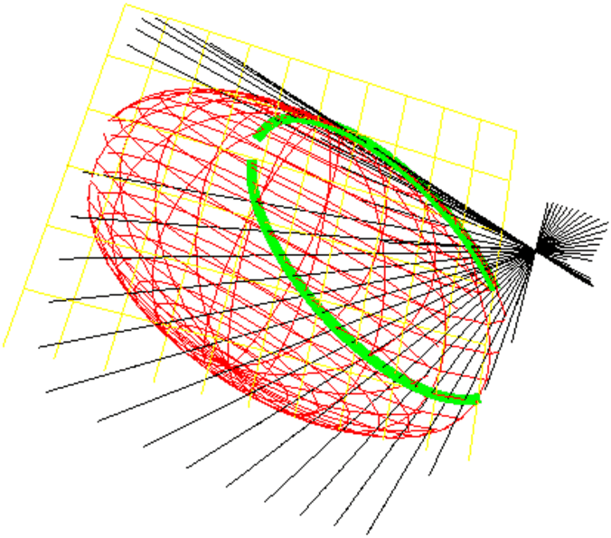
Activité
Tracer un cercle tangent à une droite et passant par deux points donnés.
Pour cela, créer quatre points A, B, C et D.
Tracer la droite E passant par A et B.
Construire un cercle C1 passant par C et D tangent à la
droite E.
Réponse
On sait que le centre du cercle cherché est sur la médiatrice de CD et
sur la parabole P de foyer C et de directrice la doite AB.
On clique avec la souris pour avoir quatre points A, B, C
et D puis on exécute la liste des instructions qui se trouve dans
geo11 (faire Charger session du
menu Fich de Xcas et selectionner geo11 du répértoire
examples/geo pour exécuter ce fichier).
Voici le détail de geo11 :
E:=droite(A,B)
trace la droite E passant par A et B,
M:=mediatrice(C,D)
trace la médiatrice de CD,
H:=projection(E,C)
définit la projection orthogonale de C sur E,
P:=parabole(C,milieu(C,H)))
trace la parabole de foyer C et de directrice E,
N:=inter(P,M)
N est la liste des points d’intersection de la droite M et de la parabole P,
C1:=cercle(N[0],C-N[0])
trace le cercle de centre N[0] passant par C : il repond à la question.
C2:=cercle(N[1],C-N[1]) trace le cercle de centre N[1] passant par C : il repond à la question.
Q:=parabole(D,milieu(D,projection(E,D))) trace la parabole de foyer D
et de directrice E, elle passe par N. Cela prouve qu’il n’y a pas d’autres
solutions.